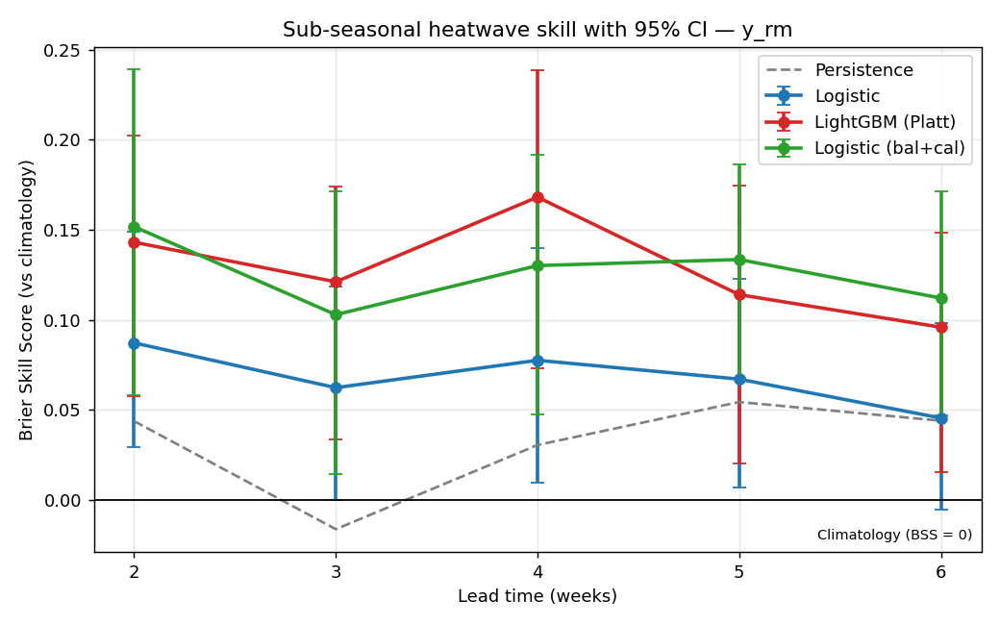
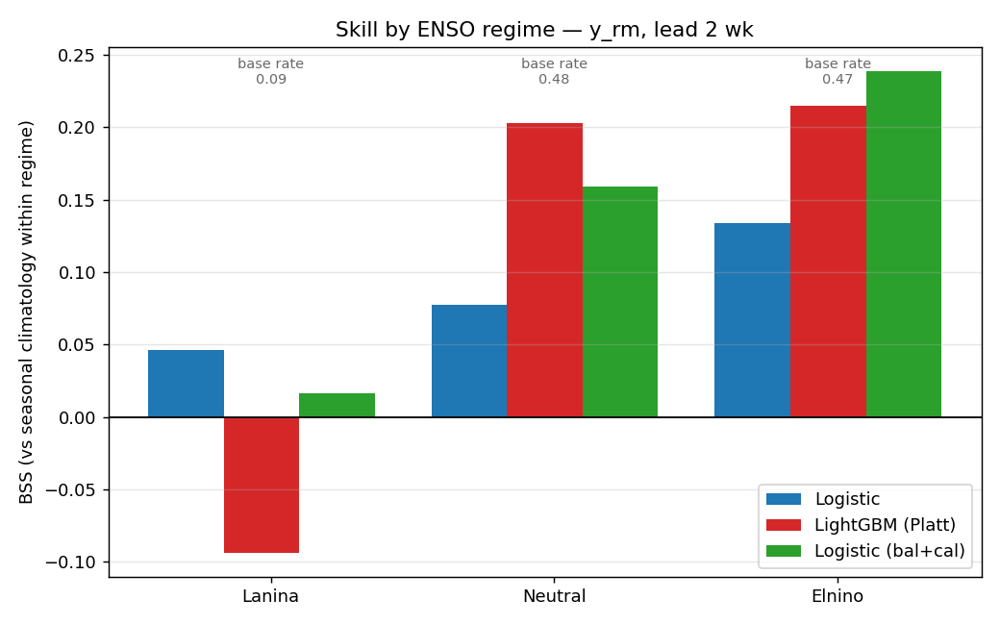
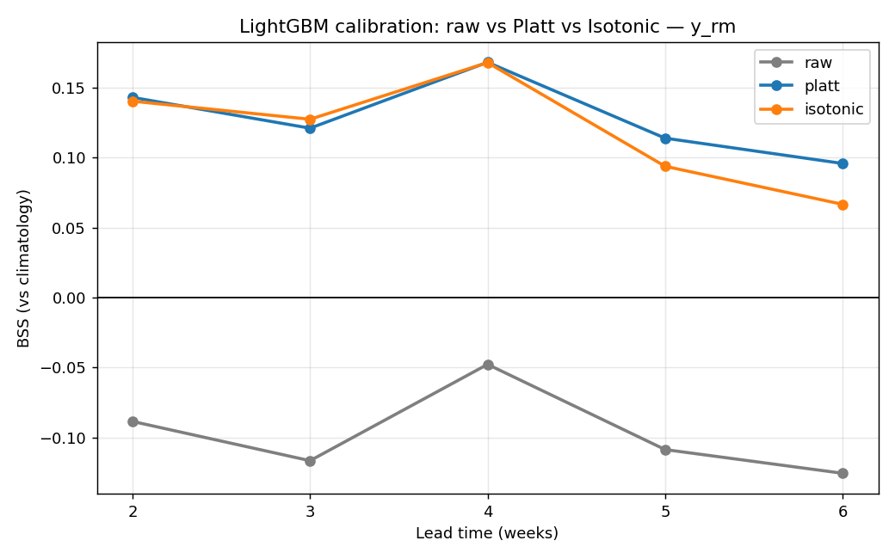
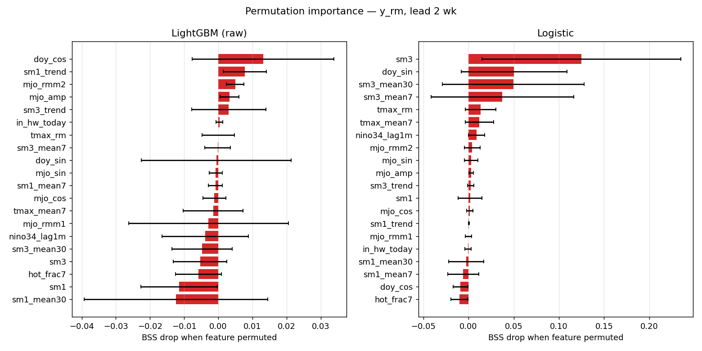

คู่มือแบบเล่าเรื่อง — อธิบายว่าตัวเลขแต่ละตัว มาได้ยังไง และ แปลว่าอะไร ตั้งแต่ "สกิลจริงหรือบังเอิญ?" ไปจนถึงข้อค้นพบที่พลิกความเข้าใจเดิม
รอบที่แล้วเราได้ผลว่าโมเดล logistic ทำคะแนน BSS = +0.168 ที่ lead 2 สัปดาห์ — ดูเหมือนชนะ baseline แต่ "ดูเหมือน" ยังไม่พอ งานรอบนี้คือพิสูจน์ว่ามันแกร่งและเชื่อถือได้จริง
สูตร: BSS = 1 − (ความคลาดเคลื่อนของโมเดล ÷ ความคลาดเคลื่อนของ baseline)
ตัวเลข +0.168 มาจากข้อมูลชุดเดียว ถ้าเราโชคดี/โชคร้ายล่ะ? เราจึง "สุ่มซ้ำ" ข้อมูลหลายพันครั้ง เพื่อดูว่าคะแนนแกว่งแค่ไหน → ได้ ช่วงความเชื่อมั่น 95% (CI)
▲ จุดส้ม = ก้อน 28 วันที่ถูกสุ่มในแต่ละรอบ
logistic +0.168 ชนะ climatology จริง (CI ไม่คร่อม 0) — แต่ ไม่ชนะ persistence (baseline ที่แกร่งกว่า). ตัวที่ แกร่งที่สุดคือ logistic_balanced_cal ที่ชนะแม้ persistence อย่างมีนัยสำคัญถึง lead 4 → นี่คือโมเดลที่ควรแนะนำใช้จริง ไม่ใช่ logistic ดิบ
| โมเดล | lead 2 | lead 3 | lead 4 | lead 5 | lead 6 |
|---|---|---|---|---|---|
| logistic (ชนะ persist?) | · | · | · | · | · |
| lgbm_cal | · | ✓ | · | · | · |
| logistic_balanced_cal | ✓ | ✓ | ✓ | · | · |
สังเกต: สกิลชัดที่ lead 2–4 (สั้น) แล้วจางลงเมื่อ lead ยาว — เป็นธรรมชาติของการพยากรณ์ sub-seasonal

รูปจริงจาก pipeline: BSS ทุก lead พร้อมแท่ง error 95%
เราแบ่ง "วันออกพยากรณ์" ตามสภาวะมหาสมุทรแปซิฟิก (เอลนีโญ / ปกติ / ลานีญา) จากค่า Niño3.4 ที่โมเดลเห็นจริง แล้วดูว่าโมเดลทำงานดีในสภาวะไหน
→ ปีเอลนีโญ ไทยมีคลื่นความร้อนถี่ขึ้นมาก สมเหตุสมผลที่ nino34 เป็นฟีเจอร์อันดับต้น ๆ
ความจริงตรงข้าม — ช่วงเอลนีโญโมเดลแกร่งสุด เพราะ climatology (เฉลี่ยทุกปี) ทายต่ำไปในปีเอลนีโญ โมเดลที่รู้จัก ENSO เลยเอาชนะได้เยอะ. ส่วน "fold ที่ดูอ่อน" จริง ๆ คือช่วง 2016–18 ที่ ไม่มีคลื่นความร้อนเลย (base rate = 0.000) ทำให้คะแนน BSS เพี้ยน (−0.733) — เป็น artifact ของช่วงไร้เหตุการณ์ ไม่ใช่ความอ่อนของโมเดล

LightGBM แยกแยะเก่ง (AUC ดี) แต่ BSS กลับติดลบ! เราผ่า Brier ออกเป็นชิ้นส่วนเพื่อหาสาเหตุ
ปัญหาของ lgbm ดิบอยู่ที่ calibration (REL/ECE สูง) ไม่ใช่การแยกแยะ — แก้ด้วยการ "recalibrate" (Platt/Isotonic) ทำให้ REL ลด ~60%

เราใช้ 2 วิธีตรวจสอบไขว้กัน: permutation (สลับค่าทีละฟีเจอร์ ดูสกิลตก) และ ablation (ตัดทีละกลุ่ม ดู BSS เปลี่ยน)
ค่า ติดลบ = ตัดแล้วแย่ลง → กลุ่มนั้นสำคัญ · ค่า บวก = ตัดแล้วดีขึ้น → กลุ่มนั้นเป็นภาระ
| ตัดกลุ่ม | lead 2 | lead 4 | lead 6 | สรุป |
|---|---|---|---|---|
| ENSO | −0.00 | −0.05 | −0.03 | สำคัญ (lead ยาว) |
| SOIL (ดิน) | +0.02 | +0.04 | +0.05 | ซ้ำซ้อน |
| THERMAL | +0.05 | +0.05 | +0.07 | ซ้ำซ้อน |
ค้นพบ: ENSO สำคัญขึ้นเมื่อ lead ยาว (3–6) ตรงตามศาสตร์ sub-seasonal · แต่ logistic (linear) overfit ฟีเจอร์ soil/thermal ที่ซ้ำซ้อน → ตัดออกกลับดีขึ้น → โมเดลที่ฟีเจอร์น้อยลงอาจดีกว่า (= ไอเดียงานต่อ)
